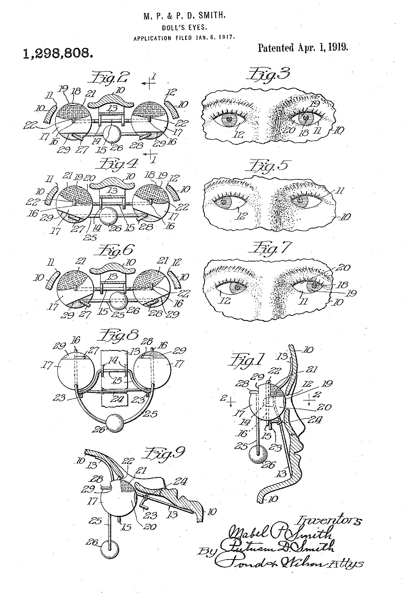
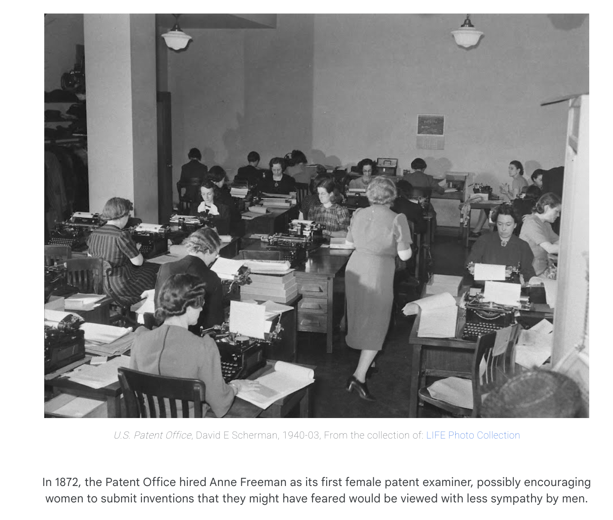

Everything in this workshop starts from patents filed by women who lived in Santa Cruz, Watsonville, and the towns around them between 1903 and 1937. A steam cooker by Bertha Leibbrandt. Doll's eyes by Mabel P. Smith. A stocking drying device by Elizabeth M. Limerick. A holder for thread, cord, tape, etc. by Mildred N. Anderson. A tooth cleanser by Kate M. Remington.
This workshop will share these inventive ideas with families!
Invent It is a two hour drop in invention workshop open to any age, built out of the research behind the performance The Mother of All Demos. Patents by women from Santa Cruz County are printed at 8.5 by 11, dozens of copies of each, stacked on the tables and pinned up on a wall. Anyone who walks in picks one and uses it as the launch pad for an invention of their own. Come with kids, come with friends, come alone.
The patents are the seed, not the assignment. A patent for a fruit dryer becomes a machine that dries feelings. A patent for a clothesline becomes a system for hanging up an entire bad mood. Six year olds, teenagers, parents, and grandparents work at the same tables, tracing, cutting, collaging, taping, and naming, and every invention is welcome no matter how impossible, expensive, or ridiculous it would be to actually build.
Because it runs as a drop in, there is no start time to miss and nothing to sign up for. You can move through the whole thing in twenty minutes or stay the full two hours and file four inventions. The workshop runs in a Yes And format. Every invention that gets filed goes up on the Chain Wall carrying a new prompt written by the person who made it, so the next person can pick it up and add to it. One historic patent branches into a chain of inventions by people who never met, and the wall gets stranger as the afternoon goes on.
People move through the room at their own speed and leave whenever they are done. Every invention filed leaves behind an open prompt for somebody else.
You accept what the last inventor made. You do not fix it, improve it, or explain why it would not work. Whatever they drew is now true.
You add. A part, a power, a problem it now solves, a job it now refuses. The chain only moves forward.
You write the next prompt before you go. Nobody leaves the patent office without leaving an invitation behind.
Each form carries the name of the person before you and the woman whose patent started the chain. Credit accumulates instead of transferring, which is the argument the whole workshop is making.
The pink desk at the end of the line, where an invention stops being a drawing and becomes a filing. Two problems get solved here at once: the invention has to stay on the wall so the chain can continue, and it has to go home with the person who made it.

The patent form is printed as a 2 or 3 part NCR set, the same paper a permit counter uses. Drawing on the top sheet presses everything through to the copy underneath. The original stays on the Chain Wall, the copy goes home, and the split is the bureaucratic gesture the whole workshop is making fun of. A third part gives me a file copy of every chain that ever ran.
The tracing paper is already on the table and they are already tracing. Two more minutes and they have made their invention twice, which is arguably the better souvenir.
A photo of the inventor holding the invention, stapled to the certificate. Kids treat a physical photo as more valuable than the drawing, and it captures the model, which no copy can.
The drawing stays because it belongs to the chain now. What goes home is the certificate and the Yes And card that was handed to them, in a stranger's handwriting. That card is proof somebody they never met asked them for something.
A self inking stamp that advances on its own, so every invention gets a real serial number and no two match. The click is the sound of the workshop, and by the second hour people are lining up for it.
The notary kind, with a custom die reading CAREtech Patent Office, Pink Sky Division. It leaves a raised seal you can feel with a thumb, it works through the duplicate copy as well as the original, and it is the most convincing object in the room. Expect everything in the building to get embossed.
Somebody other than me approves it. Whoever filed last puts on the Examiner badge, sits at the desk for ten minutes, hears the next claim read aloud, asks one question, and stamps. Approval becomes theater instead of a craft step, and it puts a child in the seat that historically told these women no.
One oversized book on the desk. Every inventor signs it under their serial number, next to the name of the person whose invention they built on. At the end of the day the register is the record of the whole afternoon, and it opens the next session already full.
The starter deck, for anyone beginning a new chain from a historic patent. Each card asks you to bend that patent somewhere it was never meant to go. Once your invention is filed, you write the next card yourself.
These cards name the woman on the patent, so her name travels with the invention instead of stopping at the wall. Each one is handed out with a copy of the patent it comes from.
The workshop draws on the patent research behind The Mother of All Demos, narrowed to inventors from Santa Cruz County so the history sits in the same place the people in the room live. Seventeen patents, filed by women of Santa Cruz, Watsonville, and the towns around them between 1903 and 1937. Ten to fifteen come to each session, printed at 8.5 by 11 with dozens of copies of each, so they can be traced over, cut apart, and collaged without anyone worrying about ruining the only one.
The workshop grew out of The Mother of All Demos, a participatory multimedia performance that memorializes 504 patents by women, reads Matilda Joslyn Gage's 1870 article "Woman as Inventor" aloud, and pays its audience for their labor. The performance argues that invention by women has always been happening and has always been credited elsewhere, a pattern named the Matilda Effect.
The performance makes that argument to an audience. The workshop hands the argument to whoever walks in and asks them to do something about it, at a table, with tape.
Invent It travels to museums, libraries, schools, and community centers. It can stand alone, follow a performance, or run as an all ages open studio paired with a gallery visit.